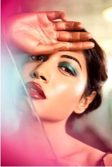
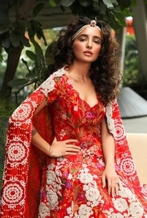
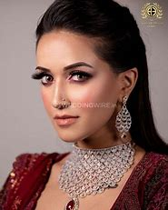
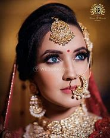
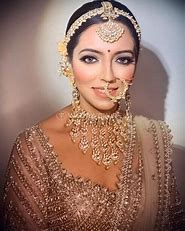

Art Work






Namrata Soni, a renowned makeup artist, with an exceptional and unique style has reached audiences in a range of mediums, from magazine covers to feature films and Ad films.
Namrata’s approach to style is simple: “I’m all about using the right products in the right places to highlight a person’s best features and natural beauty.”
As a young artist, Namrata has a commitment to going beyond the traditional. She studied at the Delamar Academy of Makeup in London, specializing in prosthetic and casualty makeup.